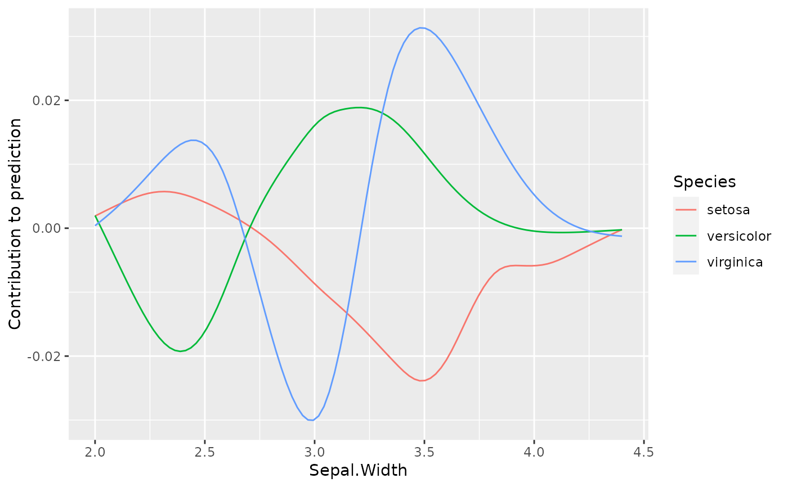
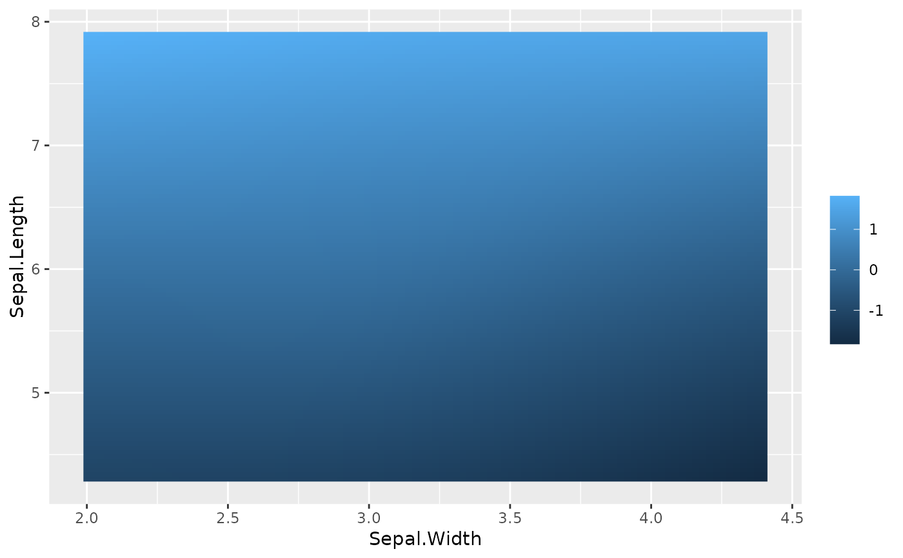
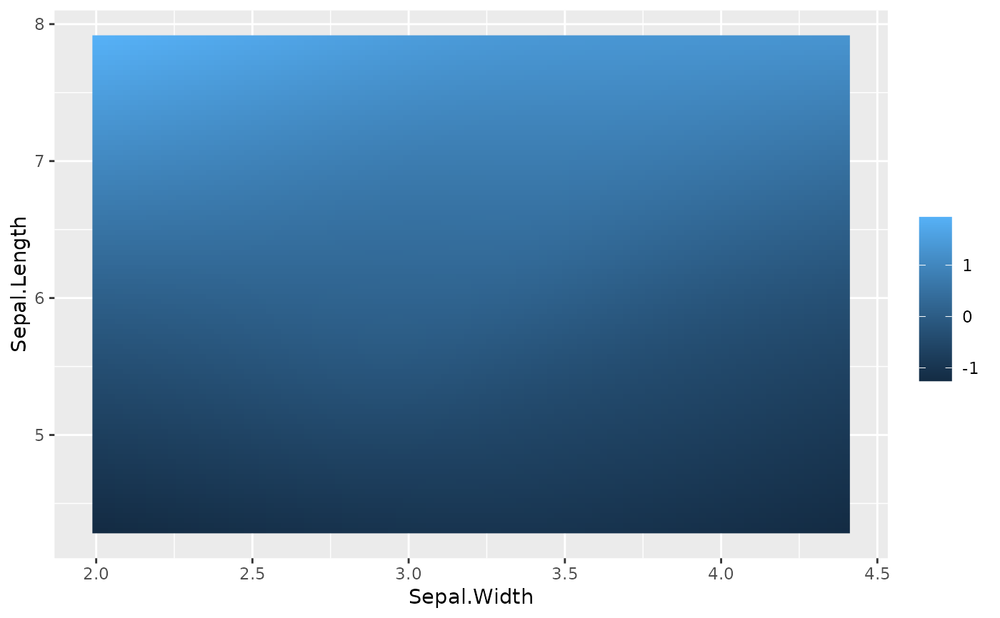

Visualize bivariate tensor products
plotTensor.RdThis function visualizes the contribution of a bivariate tensor product.
Arguments
- cboost
[
Compboostclass]
A trainedCompboostobject.- tname
[
character(2L)]
Name of the tensor base learner.- npoints
[
integer(1L)]
Number of grid points per numerical feature. Note: For two numerical features the overall number of grid points isnpoints^2. For a numerical and categorical feature it isnpoints * ncatwithncatthe number of categories. For two categorical featuresncat^2grid points are drawn.- nbins
[
logical(1L)]
Number of bins for the surface. Only applies in the case of two numerical features. A smooth surface is drawn ifnbins = NULL.
Examples
cboost = Compboost$new(data = iris, target = "Petal.Length",
loss = LossQuadratic$new())
cboost$addBaselearner("Sepal.Width", "spline", BaselearnerPSpline, df = 4)
cboost$addBaselearner("Sepal.Length", "spline", BaselearnerPSpline, df = 4)
cboost$addBaselearner("Species", "ridge", BaselearnerCategoricalRidge)
cboost$addTensor("Sepal.Width", "Sepal.Length", df1 = 4, df2 = 4)
cboost$addTensor("Sepal.Width", "Species", df1 = 4, df2 = 2)
cboost$train(1000L)
#> 1/1000 risk = 1.4
#> 25/1000 risk = 0.18
#> 50/1000 risk = 0.054
#> 75/1000 risk = 0.041
#> 100/1000 risk = 0.039
#> 125/1000 risk = 0.038
#> 150/1000 risk = 0.037
#> 175/1000 risk = 0.036
#> 200/1000 risk = 0.036
#> 225/1000 risk = 0.035
#> 250/1000 risk = 0.035
#> 275/1000 risk = 0.035
#> 300/1000 risk = 0.034
#> 325/1000 risk = 0.034
#> 350/1000 risk = 0.034
#> 375/1000 risk = 0.033
#> 400/1000 risk = 0.033
#> 425/1000 risk = 0.033
#> 450/1000 risk = 0.033
#> 475/1000 risk = 0.032
#> 500/1000 risk = 0.032
#> 525/1000 risk = 0.032
#> 550/1000 risk = 0.032
#> 575/1000 risk = 0.032
#> 600/1000 risk = 0.031
#> 625/1000 risk = 0.031
#> 650/1000 risk = 0.031
#> 675/1000 risk = 0.031
#> 700/1000 risk = 0.031
#> 725/1000 risk = 0.031
#> 750/1000 risk = 0.031
#> 775/1000 risk = 0.031
#> 800/1000 risk = 0.03
#> 825/1000 risk = 0.03
#> 850/1000 risk = 0.03
#> 875/1000 risk = 0.03
#> 900/1000 risk = 0.03
#> 925/1000 risk = 0.03
#> 950/1000 risk = 0.03
#> 975/1000 risk = 0.03
#> 1000/1000 risk = 0.03
#>
#>
#> Train 1000 iterations in 0 Seconds.
#> Final risk based on the train set: 0.03
#>
plotTensor(cboost, "Sepal.Width_Species_tensor")

plotTensor(cboost, "Sepal.Width_Sepal.Length_tensor")

plotTensor(cboost, "Sepal.Width_Sepal.Length_tensor", nbins = NULL)
